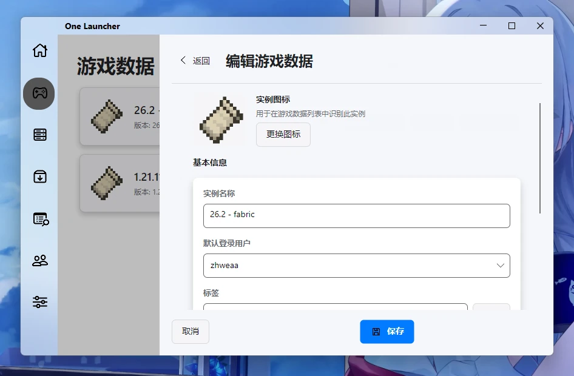
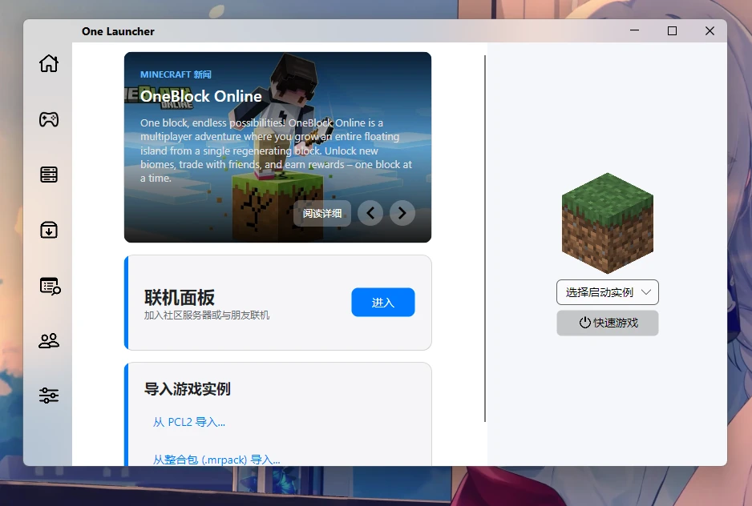

INTERFACE
启动器界面
首页提供实例、导入和快捷启动入口。
具体界面以下载版本为准。

实例管理分别管理游戏版本与实例
快捷启动从首页启动游戏
01安装游戏版本
02选择实例
03启动游戏
FEATURES
功能
版本安装、实例管理、资源下载和账户登录。
使用步骤与限制见文档。
下载与安装
支持多源竞速、任务进度与失败重试。安装版本时，可勾选自动安装 Java。
查看安装流程模组与整合包
支持 Fabric、Quilt 和 NeoForge；Forge 为预览支持。
可从 Modrinth 获取模组、光影与整合包。
账户与联机
支持 Microsoft 账户、LittleSkin 外置认证和离线账户。可收藏服务器；Windows 上可用 MCT 进行 P2P 联机。
账户与联机说明外置与离线登录受配置开关控制；WAM / MCT 为 Windows 专属。
Windows
macOS
Linux
ABOUT
关于项目
OneLauncher 是一个开源的
Minecraft Java 版启动器。
项目使用 .NET 和 Avalonia 开发。问题反馈和代码贡献通过 GitHub 提交。
开发框架.NET 10 + Avalonia
游戏版本Minecraft Java 版
社区QQ 群 897655022
项目状态开发中
下载 OneLauncher
下载文件与版本说明见 GitHub Releases。
当前 Release 提供 Windows 文件；macOS / Linux 请参考源码构建说明。下载按钮打开 GitHub Releases。